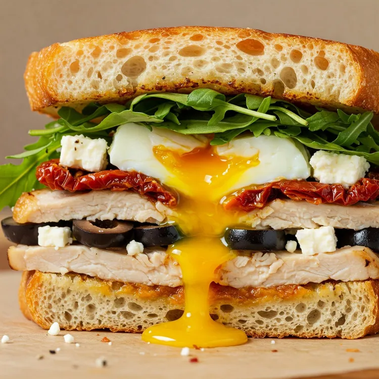

Sándwich de Pollo y Huevo

Este es el sándwich que reemplaza a cualquier hamburguesa criminal en la mañana. Es grande, es contundente, tiene proteína por todos lados pero no te tapa arterias. En esta receta, combinamos pechuga de pollo a la plancha, un huevo entero a la plancha y verduras frescas dentro de un pan integral tostado, creando un desayuno que parece de hotel pero es de gym. Además, tiene 38g de proteína, perfecto para después de entrenar pierna.